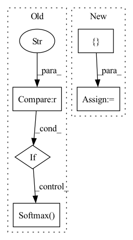

Pattern ID :1604

Before Change
self.rnn = nn.LSTM(n_bins, hidden_channels, num_layers=num_blocks, batch_first=True, bidirectional=bidirectional, dropout=dropout)
self.fc = nn.Linear(num_directions*hidden_channels, n_bins*embed_dim)
if mask_nonlinear == "sigmoid":
self.mask_nonlinear2d = nn.Sigmoid()
elif mask_nonlinear == "softmax":
self.mask_nonlinear2d = nn.Softmax(dim=1)
else:
raise NotImplementedError("")
self.take_log, self.take_db = take_log, take_db
After Change
self.rnn = nn.LSTM(n_bins, hidden_channels, num_layers=num_blocks, batch_first=True, bidirectional=bidirectional, dropout=dropout)
self.fc = nn.Linear(num_directions*hidden_channels, n_bins*embed_dim)
kwargs = {}
if mask_nonlinear == "softmax":
kwargs["dim"] = 1
In pattern: SUPERPATTERN
Frequency: 3
Non-data size: 5
Instances
Fragment ID: 2943774
Project Name: tky823/dnn-based_source_separation
Commit Name: 6333394de0e49d076fa5e5f6d06d7f145ec8bcec
Time: 2021-11-22
Author: delta9guitar97@gmail.com
File Name: src/models/danet.py
Class Name: DANet
Method Name: __init__
Parent Class: nn.Module
Fragment ID: 2943775
Project Name: tky823/dnn-based_source_separation
Commit Name: 87afd25f53e66db234ad9349e8fdedc0061d33b1
Time: 2021-11-13
Author: delta9guitar97@gmail.com
File Name: src/models/dptnet.py
Class Name: Separator
Method Name: __init__
Parent Class: nn.Module
Fragment ID: 2943777
Project Name: tky823/dnn-based_source_separation
Commit Name: 10282099ca12b94e9b9870841d4de0252506baab
Time: 2021-12-05
Author: delta9guitar97@gmail.com
File Name: src/models/wavenet.py
Class Name: WaveNet
Method Name: __init__
Parent Class: nn.Module